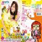
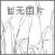

栋力公告
欢迎光临栋力无限音乐站！本网站所有歌曲均来自互联网，欢迎用户上传歌曲的Lrc格式歌词，所有用户在登录后上传的歌词在播放时将显示歌词上传者。
栋力推荐单曲
音乐人气之星
名称：未命名
主人：未命名 点击：一次
主人：未命名 点击：一次
 名称：意犹未尽
名称：意犹未尽主人：未命名 点击：一次
名称：未命名
主人：未命名 点击：一次
主人：未命名 点击：一次
名称：顽固
主人：未命名 点击：一次
主人：未命名 点击：一次
名称：sb.sth主人：未命名 点击：一次
曲库统计
歌手：1276位专辑：3918张歌曲：51219首最近更新于： 2007-03-13 18:10:32
最新门专辑 Hot Albums

潘多拉张韶涵

英文歌曲1无名
 知足五月天
知足五月天
blue planeDonnal
在你身边张学友
我们都是好孩子王争
见习爱神Twins
最近原唱更新
 专辑：《笑忘书》
更新：2007-03-13
歌手：张敬轩
专辑：《笑忘书》
更新：2007-03-13
歌手：张敬轩
专辑：《放开》
更新：2007-03-12
歌手：信乐团
专辑：《朋友难当》
更新：2007-03-12
歌手：羽泉
专辑：《给自己情书》
更新：2007-03-11
歌手：梁咏琪
专辑：《在你身边》
更新：2007-03-11
歌手：张学友
专辑：《Thank You》
更新：2007-03-11
歌手：Declan
最新上传歌曲
单曲排行
专辑排行
栋力推荐专辑
 专辑：《亲亲》
更新：2007-03-10
歌手：梁静茹
专辑：《亲亲》
更新：2007-03-10
歌手：梁静茹
专辑：《The One》
更新：2007-03-10
歌手：张靓颖
专辑：《爱邓...》
更新：2007-03-10
歌手：张靓颖
最新乐评
《每首都是主打~~》
Iuoyufei
发几张babyface的专辑吧！！！超级喜欢他的曲风
 《莫文蔚精选辑》
jecci
喜剧之王里的“the way you make me feel”谁有国语版啊？
《笑忘书》》
Leon
一张不错的专辑！笑忘书，余震都很好听！
《每首都是主打~~》
lynxmao
nice!
《莫文蔚精选辑》
jecci
喜剧之王里的“the way you make me feel”谁有国语版啊？
《笑忘书》》
Leon
一张不错的专辑！笑忘书，余震都很好听！
《每首都是主打~~》
lynxmao
nice!
Copyright©2004-2007 Synx Studio of NetUnion in UESTC Asp.net V2.0
MusicAdmin@intojoy.com||Admin||令日访问4564次，总访问7458264次
推荐1024X768分辩率，Internet Explorer版本6.0或以上浏览器浏览本网站 Design By Flying All Rights Reserved.